48:41 · 15 OPERE
Ettore Cinnella, Ucraina. Il Genocidio dimenticato.
Il filo del discorso
La presentazione di Ucraina. Il genocidio dimenticato di Ettore Cinnella diventa una riflessione sulla memoria delle violenze del Novecento e sulla responsabilità di chi le racconta. Dr Divago insiste sul rapporto fra capacità tecnica, distruzione e assuefazione morale, accostando carestia sovietica, genocidio armeno, Shoah e bombardamenti. Nel libro valorizza in particolare la opposizione di Martem’jan Rjutin a Stalin e la vicenda delle testimonianze rese poco credibili o respinte per ragioni politiche. Conquest e Kravchenko introducono il tema della ricezione delle notizie sul regime sovietico; il richiamo a Carlo Levi collega la vulnerabilità delle culture contadine alle possibilità di trasmetterne la esperienza. La conclusione difende il libro e il lavoro storico contro la riduzione del passato a giustificazione del presente, chiamando in causa Polanyi. Il contributo contiene anche giudizi molto polemici su università, capitalismo e intellettuali. La scheda distingue questi giudizi dai dati verificati e corregge confusioni di nomi, conteggi e ruoli: Eatherly non pilotava l’Enola Gay e Kravchenko fu parte attrice nel processo per diffamazione. La interpretazione genocidaria dell’Holodomor è presentata con i suoi riferimenti storiografici e istituzionali, senza appiattire eventi diversi in un’unica equivalenza.
I libri nel discorso
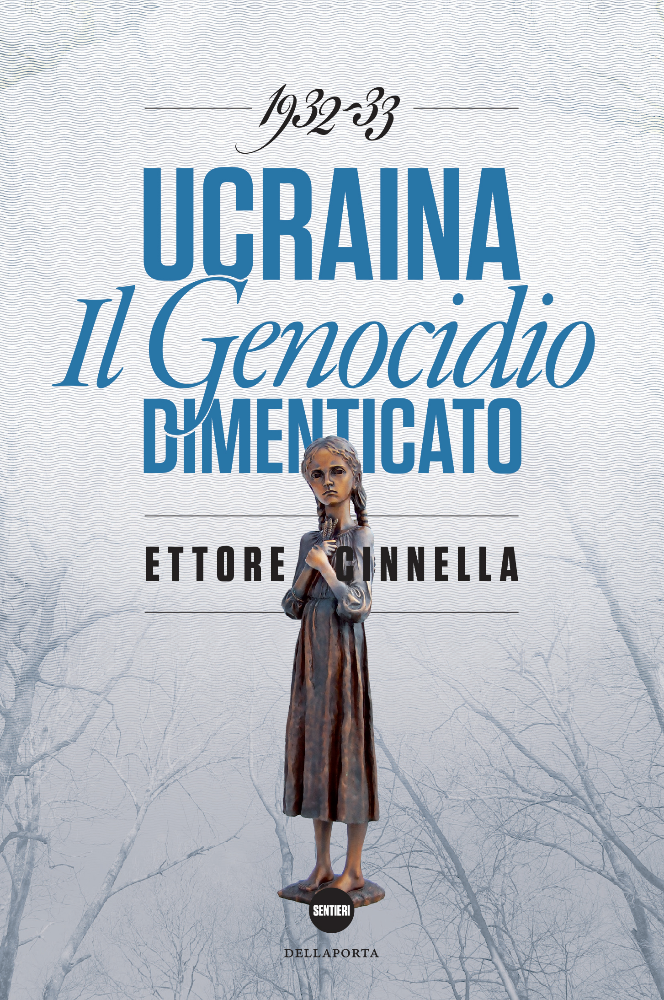
Ucraina. Il genocidio dimenticato (1932–1933)
Copertina: Della Porta Editori, collana Sentieri,304 pagine, ISBN 9788896209172. Copertina corrente del catalogo editoriale con la figura della bambina del memoriale; non è attribuita al filmato una precisa tiratura.
Immagine autentica dell’opera, controllata visivamente; l’edizione di riferimento non è attribuita al filmato.
Titolo, autore, Della Porta e2015espliciti.
Passaggio 1:13 ↗ · Fonti e libro ↗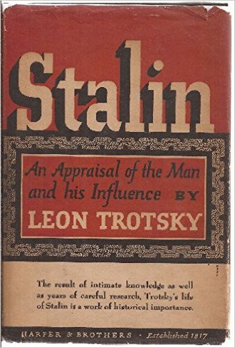
Stalin: An Appraisal of the Man and His Influence
Copertina: Harper & Brothers, New York, 1946; a cura e in traduzione di Charles Malamuth, xv e 516 pagine secondo la recensione contemporanea. Immagine della sovraccoperta Harper attribuita al 1946; non prova della specifica tiratura posseduta dal relatore.
Immagine autentica dell’opera, controllata visivamente; l’edizione di riferimento non è attribuita al filmato.
Biografia di Stalin di Trockij esplicita come precedente contributo.
Passaggio 1:28 ↗ · Fonti e libro ↗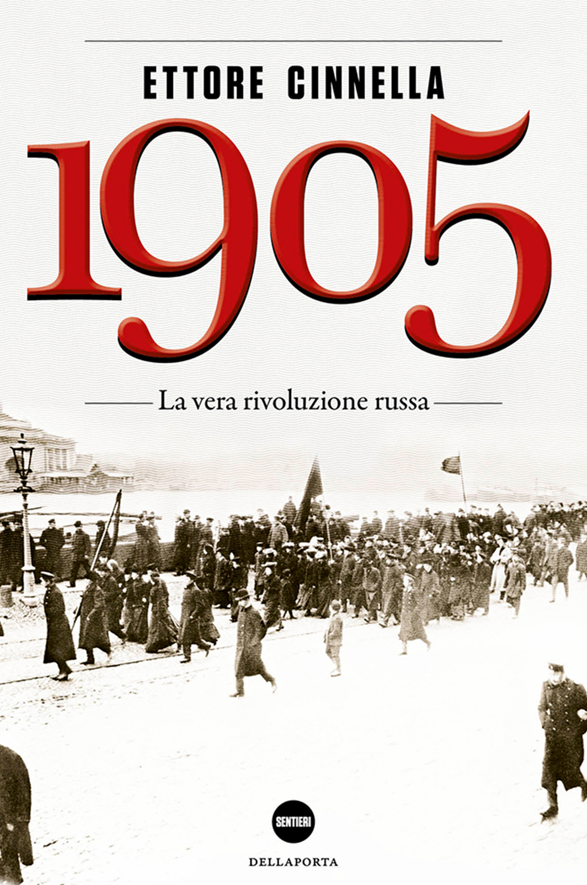
1905. La vera rivoluzione russa
Copertina: Copertina autentica scaricata dalla scheda Della Porta Editori, ISBN 9788896209011. 543 pagine, collana Sentieri. La stampa esatta usata dal relatore non è identificata.
Immagine autentica dell’opera, controllata visivamente; l’edizione di riferimento non è attribuita al filmato.
1905. La vera rivoluzione russa esplicito nella biografia.
Passaggio 4:54 ↗ · Fonti e libro ↗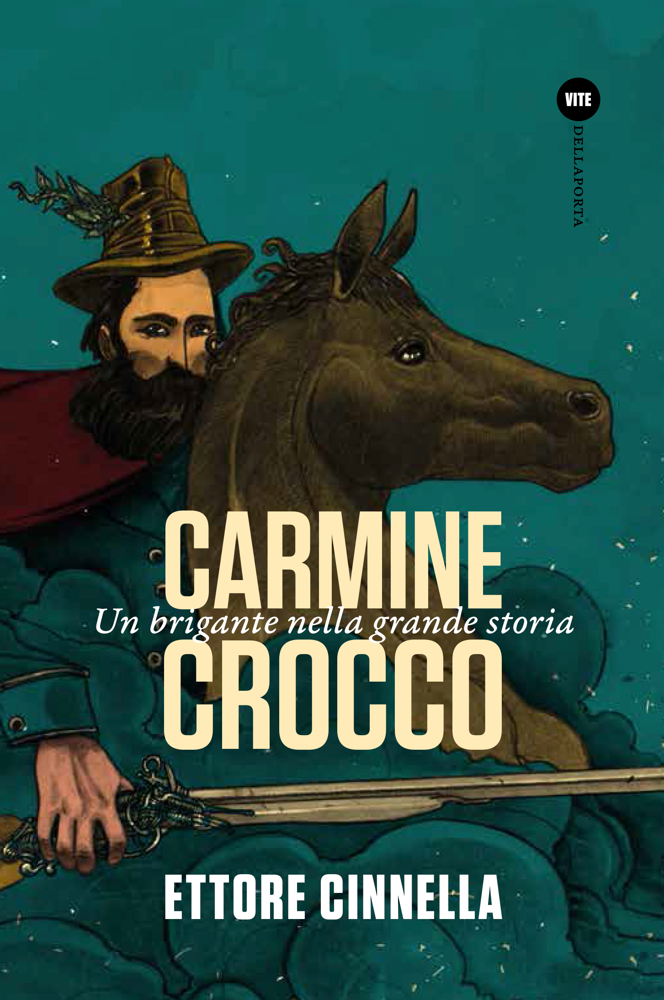
Carmine Crocco. Un brigante nella grande storia
Copertina: Copertina autentica scaricata dalla scheda Della Porta Editori, ISBN 9788896209219. 274 pagine nella scheda corrente; edizioni precedenti hanno paginazione diversa. La stampa esatta usata dal relatore non è identificata.
Immagine autentica dell’opera, controllata visivamente; l’edizione di riferimento non è attribuita al filmato.
Carmine Crocco. Un brigante nella grande storia esplicito.
Passaggio 4:59 ↗ · Fonti e libro ↗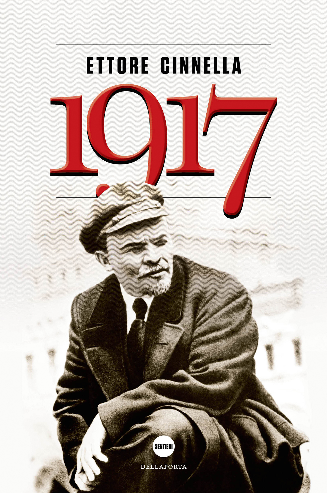
1917. La Russia verso l’abisso
Copertina: Copertina autentica scaricata dalla scheda Della Porta Editori, ISBN 9788896209042. 470 pagine, collana Sentieri; non la special edition. La stampa esatta usata dal relatore non è identificata.
Immagine autentica dell’opera, controllata visivamente; l’edizione di riferimento non è attribuita al filmato.
La Russia verso l’abisso esplicito, titolo completo verificato presso editore.
Passaggio 5:02 ↗ · Fonti e libro ↗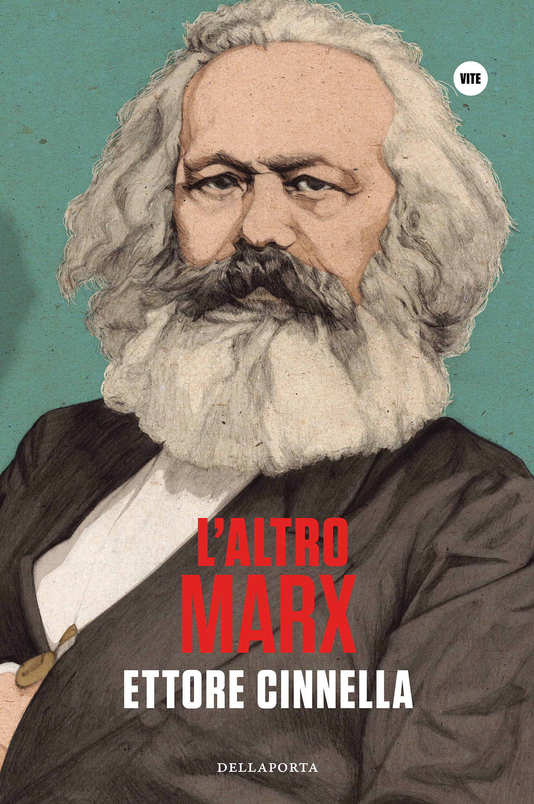
L’altro Marx
Copertina: Copertina autentica scaricata dalla scheda Della Porta Editori, ISBN 9788896209356. 200 pagine, collana Biografie nella scheda corrente; non si attribuiscono questi dati alla prima edizione 2014. La stampa esatta usata dal relatore non è identificata.
Immagine autentica dell’opera, controllata visivamente; l’edizione di riferimento non è attribuita al filmato.
L’altro Marx esplicito.
Passaggio 5:05 ↗ · Fonti e libro ↗
Realismo capitalista
Identificazione probabile
Fotografia editoriale del volume NERO: NERO · Not, 2018 · traduzione Valerio Mattioli
Fotografia editoriale autentica del volume NERO: titolo, autore e marchio leggibili, copertina e dorso visibili. L’immagine raffigura la copertina del volume. L’edizione italiana è del 2018, non del 2009.
Due contributi su Fisher e assenza di alternative: probabile riferimento a Realismo capitalista, titolo non pronunciato.
Passaggio 7:05 ↗ · Fonti e libro ↗
Il Golgota armeno / Armenian Golgotha
Identificazione probabile
Copertina: Armenian Golgotha: A Memoir of the Armenian Genocide, 1915–1918, Vintage, 9 marzo 2010, 576 pagine, traduzione di Peter Balakian con Aris Sevag, ISBN 9781400096770. Copertina verticale completa con ritratto dell’autore e cornice ornamentale rossa e oro. Originali armeni in due volumi, Vienna 1922 e Parigi 1959; traduzione inglese Knopf 2009. Non identificata l’edizione mostrata nel filmato.
Immagine autentica dell’opera, controllata visivamente; l’edizione di riferimento non è attribuita al filmato.
Grigoris Balakian e testimonianza sul genocidio armeno: probabile titolo Il Golgota armeno.
Passaggio 11:42 ↗ · Fonti e libro ↗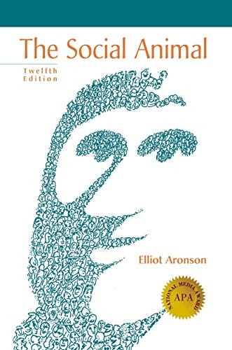
The Social Animal
Identificazione probabile
Copertina: Copertina inglese della dodicesima edizione, ISBN 9781464144189, Macmillan Learning 2018,480 pagine. Il catalogo attribuisce questa edizione a Elliot e Joshua Aronson; la prima edizione 1972 è di Elliot Aronson. Il volume letto dal relatore non è identificato nella tiratura.
Immagine autentica dell’opera, controllata visivamente; l’edizione di riferimento non è attribuita al filmato.
Psicologo americano non nominato; corrispondenza del passo Madrid 1936/sondaggio 1945 con The Social Animal.
Passaggio 15:55 ↗ · Fonti e libro ↗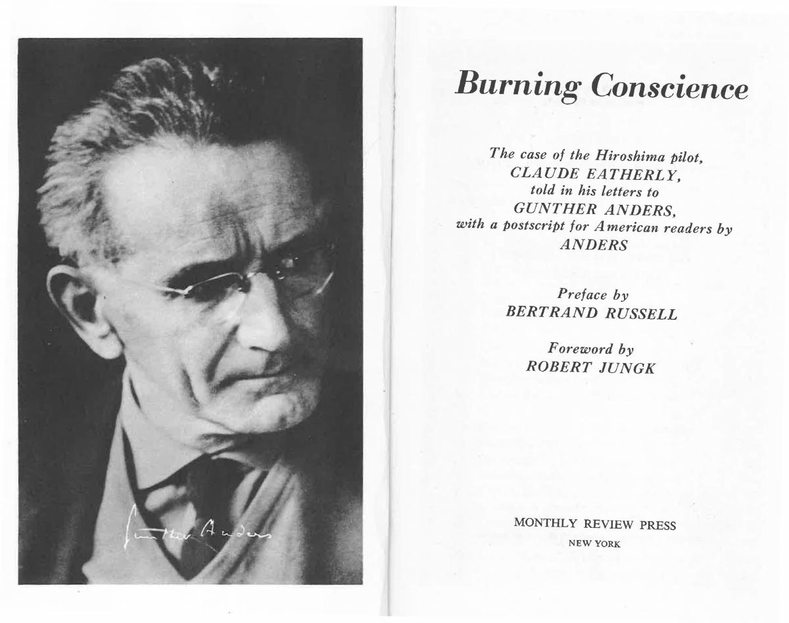
Il pilota di Hiroshima, ovvero: la coscienza al bando / Burning Conscience
Identificazione probabile
Frontespizio con ritratto, edizione americana 1962: Frontespizio con ritratto, non copertina esterna, da Burning Conscience, Monthly Review Press, New York 1962, prima edizione americana; originale tedesco Off limits für das Gewissen 1961. La seconda pagina della scansione conferma le date. Distinto dal volume italiano Linea d’Ombra 1992, traduzione Renato Solmi.
Prima apertura della scansione universitaria, con ritratto a sinistra e frontespizio a destra. Non copertina esterna e non edizione italiana. PDF integrale conservato privatamente.
Carteggio Anders/pilota identificato probabilmente, correggendo la confusione Eatherly/Enola Gay.
Passaggio 20:39 ↗ · Fonti e libro ↗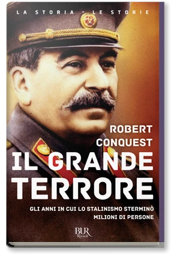
Il grande terrore (The Great Terror)
Identificazione probabile
Copertina: BUR Rizzoli,5 maggio 2016,848 pagine, ISBN 9788817087285; traduzione Adriana Valori Piperno, edizione italiana a cura di Paolo Dossena. Prima uscita inglese 1968; distinguere la revisione successiva e la traduzione dalla prima edizione.
Immagine autentica dell’opera, controllata visivamente; l’edizione di riferimento non è attribuita al filmato.
Libro di Conquest sulle grandi purghe pubblicato negli anni Sessanta: identificazione probabile.
Passaggio 35:58 ↗ · Fonti e libro ↗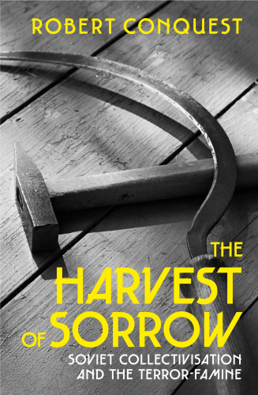
The Harvest of Sorrow. Soviet Collectivisation and the Terror-Famine
Copertina: Bodley Head,1 novembre 2018,448 pagine, ISBN 9781847925671. Copertina editoriale autentica. Prima uscita 1986; l’immagine non è indicata come prima edizione.
Immagine autentica dell’opera, controllata visivamente; l’edizione di riferimento non è attribuita al filmato.
The Harvest of Sorrow esplicito.
Passaggio 36:42 ↗ · Fonti e libro ↗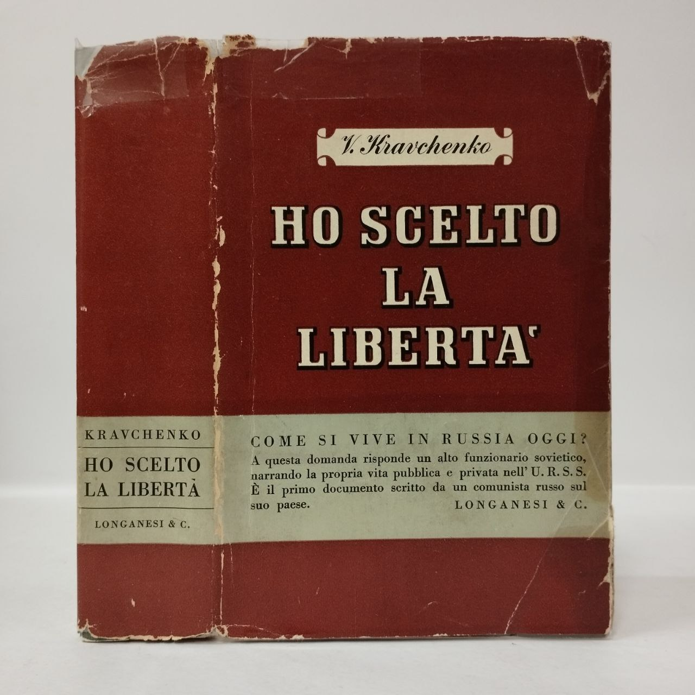
Ho scelto la libertà (I Chose Freedom)
Identificazione probabile
Copertina: Longanesi, Milano 1948, Il mondo nuovo14, traduzione C. Dallari,860 pagine nel catalogo bibliotecario. Fotografia della sovraccoperta di un esemplare usato con segni di usura: non immagine ricostruita. Originale americano 1946. Nessun ISBN attribuito alla edizione 1948.
Immagine autentica dell’opera, controllata visivamente; l’edizione di riferimento non è attribuita al filmato.
Kravchenko e rivelazioni sul regime sovietico espliciti, titolo delle memorie non pronunciato.
Passaggio 39:15 ↗ · Fonti e libro ↗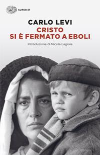
Cristo si è fermato a Eboli
Copertina: Einaudi, Super ET, 2025, introduzione di Nicola Lagioia, 288 pagine; edizione di riferimento successiva al video.
Copertina autentica dell’edizione Einaudi 2025, con introduzione di Nicola Lagioia. È successiva alla discussione del 2021 e non viene attribuita alla copia eventualmente letta dal relatore.
Levi e Cristo si è fermato a Eboli espliciti.
Passaggio 43:00 ↗ · Fonti e libro ↗
La grande trasformazione (The Great Transformation)
Copertina di una edizione inglese: Copertina inglese Beacon Press 2001, ISBN 9780807056431, prefazione Joseph E. Stiglitz e introduzione Fred Block. Originale 1944. Non copertina della traduzione Einaudi di Roberto Vigevani, prima uscita italiana 1974.
Beacon Press 2001. La immagine non è attribuita alla edizione italiana evocata nel filmato.
Karl Polanyi e La grande trasformazione espliciti.
Passaggio 46:33 ↗ · Fonti e libro ↗